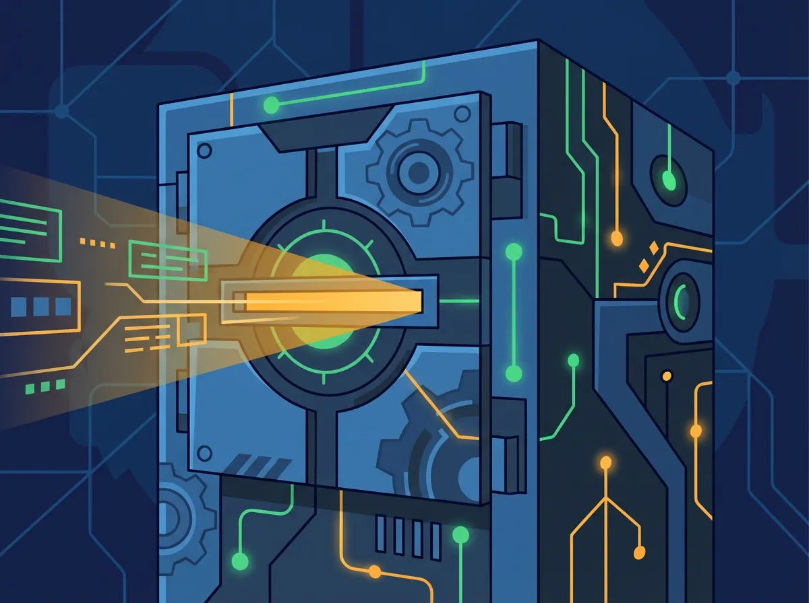
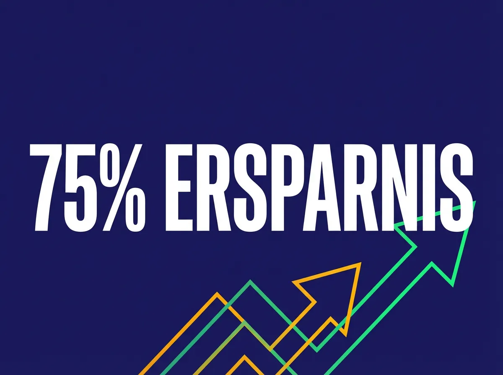

Impuls · · 10 Min.
Der hybride Ansatz: Warum weder Cloud noch Isolation für österreichische KMUs funktioniert
Aus dem Archiv: Dieser Beitrag ist vor über einem halben Jahr erschienen. Manche Zahlen und Produktnamen haben sich seither geändert.
Das Wichtigste in Kürze
- Am 2. August 2026 endet die Übergangsfrist für Hochrisiko-KI-Systeme – Compliance wird Pflicht
- Reine Cloud-Lösung: €108.000 über 3 Jahre vs. Hybride Lösung: €27.000 (75% Ersparnis)
- Das AI Gateway als "intelligente Weiche" entscheidet automatisch: sensible Daten lokal, Commodity in die Cloud
- aws AI Adoption fördert hybride Systeme mit bis zu €150.000 (25-45% Quote)
- Die Frage ist nicht "Cloud oder lokal?" – sondern: Wer kontrolliert die Routing-Architektur?
Alle Themen dieser Serie im Überblick
Dieser Artikel ist der zentrale Übersichtsartikel zur KI-Souveränität für österreichische KMUs. Er verknüpft die wichtigsten Einzelthemen:
| Thema | Artikel | Kernaussage |
|---|---|---|
| Entscheidungslogik | [Das Schleusen-Prinzip](/blog/schleusen-prinzip-cloud-ki-hybrid) | Drei Zonen für Ihre Daten |
| Hardware | [RTX 3090 vs. RTX 5090](/blog/ki-hardware-2025-rtx-3090-vs-5090-kmu-strategie) | VRAM ist der Flaschenhals, nicht TFLOPS |
| Rechtssicherheit | [Open Source Illusion](/blog/open-source-illusion-llama-eu-ausschluss-kmu) | Llama 4 ist für EU verboten |
| ROI | [Der 100-Euro-Mitarbeiter](/blog/100-euro-mitarbeiter-ki-roi-kmu-oesterreich-2025) | KI-Kosten vs. Personalkosten |
| Risiko | [Schatten-KI](/blog/ki-souveraenitaet-schatten-ki-oesterreich-2025) | 70% nutzen KI ohne IT-Wissen |
| Vendor Lock-in | [Cloud Casino](/blog/cloud-casino-vendor-lock-in-saas-risiko) | Preiserhöhungen sind Muster |
Die Debatte "Cloud oder lokal?" führt in die Irre. Die richtige Frage lautet: Welche Daten dürfen wohin – und wer entscheidet das?
Als ich vor zwei Jahren begann, mich intensiv mit lokalen KI-Systemen zu beschäftigen, war die Motivation einfach: Ich wollte verstehen, was technisch möglich ist, bevor ich anderen etwas empfehle. Was ich dabei gelernt habe, forme ich jetzt in einen Ansatz, den ich "Souveränitäts-Architektur" nenne.
Das Jahr 2026 markiert dabei einen Wendepunkt. Laut EU-Kommission endet am 2. August 2026 die Übergangsfrist für die meisten Hochrisiko-KI-Systeme. Gleichzeitig macht neue Hardware (NVIDIA RTX 5090, Apple M5) lokale KI erstmals für KMUs wirtschaftlich tragbar.
Warum ist die Cloud-only-Strategie für KMUs problematisch?
Reine Cloud-Lösungen bieten sofortigen Zugang zu den stärksten Modellen – GPT-4, Claude, Gemini. Doch sie bergen drei strukturelle Risiken, die mit zunehmender Nutzung exponentiell wachsen.
Risiko 1: Datenkontrolle und DSGVO
Jeder Prompt, der an ChatGPT oder Claude geht, verlässt das Unternehmen. Bei einfachen Fragen ist das vertretbar. Bei sensiblen Daten nicht.
Laut einer Analyse der Wirtschaftskammer Österreich nutzen bereits 25% der Mitarbeiter in KMUs private KI-Tools mit Firmendaten – ohne Wissen der Geschäftsführung. Das ist "Schatten-KI", die heute in Ihrem Unternehmen existiert.
Risiko 2: Kostenexplosion bei Skalierung
Pay-per-Token-Modelle skalieren linear. Ein einzelner Mitarbeiter, der täglich 50 Prompts absetzt, kostet €60-80 pro Monat. Ein automatisierter Agent, der täglich hunderte interne Dokumente durchsucht, kann tausende Euro monatlich verursachen.
Ein häufiges Szenario in der Praxis: "Wir haben mit ChatGPT Plus angefangen, jetzt zahlen wir €3.000 im Monat für die API." Das ist kein Einzelfall.
Risiko 3: Vendor Lock-in und Preismacht
Wenn OpenAI morgen die Preise verdoppelt – was 2024 bereits passierte – haben Sie keine Verhandlungsposition. Wie das [Cloud-Casino](/blog/cloud-casino-vendor-lock-in-saas-risiko) zeigt: Die Preiserhöhungen 2024/2025 sind ein Muster, keine Ausnahme.
Warum ist reine lokale Isolation auch keine Lösung?
Die Gegenreaktion – alles lokal, kein Cloud-Kontakt – klingt sicher, ist aber oft eine strategische Sackgasse.

Problem 1: Innovationsgeschwindigkeit
Die besten Reasoning-Modelle (GPT-4o, Claude Opus, Gemini Ultra) sind Cloud-exklusiv. Ein Unternehmen, das sich komplett abschottet, verzichtet auf Fähigkeiten, die Wettbewerber nutzen. Laut Gartner werden bis 2027 über 80% der Enterprise-KI-Anwendungen auf Foundation Models basieren, die primär aus der Cloud kommen.
Problem 2: Kosten der Spitzenleistung
Ein lokales System, das mit GPT-4 in allen Bereichen mithält, erfordert Hardware im Wert von €50.000+. Für die meisten KMUs unrealistisch – und unnötig, wenn man hybride Architekturen versteht.
Problem 3: Wartung und Expertise
Lokale KI-Systeme brauchen Updates, Sicherheitspatches, Modellwechsel. Ohne dediziertes Personal wird das zur Dauerbaustelle. "Wir haben uns einen Server gekauft und niemand weiß, wie man ihn aktualisiert" – ein Szenario, das häufig berichtet wird.
Die Antwort ist also: Beides – aber nach klaren Regeln.
Was die meisten übersehen: Die Routing-Architektur entscheidet
Der hybride Ansatz ist nicht "ein bisschen Cloud, ein bisschen lokal". Er ist eine Architektur mit klarer Entscheidungslogik.
Das Herzstück ist das AI Gateway – eine intelligente Weiche, die jeden Prompt analysiert und automatisch routet.
Das Schleusen-Prinzip: Drei Zonen
Das [Schleusen-Prinzip](/blog/schleusen-prinzip-cloud-ki-hybrid) definiert drei Datenzonen:
| Zone | Datentyp | Routing | Beispiel |
|---|---|---|---|
| Kernwissen | PII, Verträge, Personal | Zwingend lokal | Kundenname, IBAN, Gehaltsdaten |
| Arbeitsdaten | Entwürfe, Recherche | Lokal bevorzugt | Produktentwicklung, Strategiepapiere |
| Commodity | Allgemeinwissen | Cloud erlaubt | "Was ist der Unterschied zwischen GmbH und AG?" |
Wie das Gateway funktioniert
Das Gateway (z.B. basierend auf Portkey, LiteLLM oder Kong) analysiert jeden Prompt nach drei Kriterien:
Kriterium 1: Sensibilität Enthält der Prompt PII (Personally Identifiable Information)? → Zwingend lokal.
Kriterium 2: Komplexität Erfordert die Aufgabe tiefes logisches Schließen (Reasoning)? → Cloud (falls nicht sensibel).
Kriterium 3: Last/Kosten Ist der lokale Server ausgelastet? → Cloud als Failover.
Das Gateway kann so konfiguriert werden, dass es automatisch Namen durch "[PERSON_1]" und IBANs durch "[IBAN_1]" ersetzt, bevor eine Anfrage an die Cloud geht. Die Cloud sieht nie die echten Daten.
Was hat sich 2025/2026 technisch geändert?
Zwei Hardware-Entwicklungen machen lokale KI für KMUs erstmals wirtschaftlich sinnvoll.
NVIDIA RTX 5090 (Blackwell Architektur)
Laut NVIDIA bietet die RTX 5090 mit 32 GB GDDR7 VRAM und nativer FP4-Unterstützung die doppelte effektive Kapazität der Vorgängergeneration. Praktische Implikation: Ein 70-Milliarden-Parameter-Modell (Llama-3-70B, Mistral Large), das früher teure Rechenzentrums-Karten (A100/H100) benötigte, läuft nun auf Consumer-Hardware.
Laut Geizhals liegt die RTX 5090 aktuell bei ca. €2.700. Zwei Karten plus Server-Infrastruktur kosten €10.000-12.000 in der Anschaffung. Mehr zur [Hardware-Strategie](/blog/ki-hardware-2025-rtx-3090-vs-5090-kmu-strategie).
Apple Silicon (M5 Generation)
Für kreative Branchen bietet Apple mit der M5-Generation eine Alternative. Laut Apple-Analysten könnte ein Mac Studio M5 Ultra bis zu 256-512 GB Unified Memory bieten. Das erlaubt das lokale Ausführen extrem großer Modelle (>100B Parameter) für spezialisierte Aufgaben wie RAG-Systeme mit riesigen Dokumentenmengen.
Die TCO-Rechnung: €108.000 vs. €27.000
Die Total Cost of Ownership über 3 Jahre zeigt den wirtschaftlichen Vorteil des hybriden Ansatzes:
| Kostenposition | Reine Cloud (SaaS) | Hybride Lösung |
|---|---|---|
| Initialinvestition (CapEx) | €0 | €12.000 - €15.000 |
| Laufende Kosten (OpEx/Jahr) | €36.000 | €4.000 |
| Datenschutz-Risiko | Hoch (Rechtsunsicherheit) | Niedrig (Daten lokal) |
| Gesamtkosten (3 Jahre) | €108.000 | €27.000 |
Annahme: 50 intensive Wissensarbeiter, tägliche KI-Nutzung. Cloud: €60/User/Monat. Hybrid: Strom, Wartung, geringe Cloud-Gebühren.
Die Ersparnis beträgt ca. 75% – und die Daten bleiben unter Ihrer Kontrolle.
Was bedeutet der EU AI Act ab August 2026 konkret?
Laut EU-Kommission endet am 2. August 2026 die Übergangsfrist für die meisten Hochrisiko-KI-Systeme. Für KMUs bedeutet das: Compliance ist keine Option für "später", sondern eine harte Marktzutrittsvoraussetzung.

Die Zeitleiste
| Datum | Meilenstein | Relevanz für KMUs |
|---|---|---|
| Februar 2025 | Verbotene Praktiken & AI Literacy | Schulungspflicht beginnt |
| August 2025 | GPAI & Governance | Benannte Stellen akkreditiert |
| 2. August 2026 | Vollanwendung Hochrisiko-KI | Harte Deadline für Compliance |
| August 2027 | Produkte mit Sicherheitskomponenten | KI in Maschinen, Aufzügen etc. |
Was ist Hochrisiko für KMUs?
Laut Haufe Rechtsportal fallen folgende Anwendungen unter Hochrisiko:
- Beschäftigung und Personal: KI zur Auswahl von Bewerbern, Beförderung, Kündigung
- Kreditwürdigkeitsprüfung: Scoring für Kundenbonität
- Bildung: Bewertung von Prüfungen, Zuweisung zu Ausbildungsplätzen
Wichtig: Ein Chatbot für Kundenservice ist KEIN Hochrisiko – er unterliegt nur Transparenzpflichten ("Sie sprechen mit einer KI").
Laut IHK München können Verstöße mit Bußgeldern von bis zu 35 Millionen Euro oder 7% des weltweiten Jahresumsatzes geahndet werden. Für KMUs gelten reduzierte Beträge, aber das Risiko bleibt signifikant.
Der Compliance-Vorteil des hybriden Ansatzes
Der EU AI Act fordert für Hochrisiko-Systeme:
- Data Governance: Trainings- und Testdaten müssen Qualitätskriterien erfüllen
- Logging: Automatische Protokollierung zur Rückverfolgbarkeit
- Technische Dokumentation: Detaillierte Systembeschreibung für Behörden
- Human-in-the-Loop: Menschliche Aufsicht muss möglich sein
Wer seine Daten lokal hält und kuratiert, kann die Datenqualität besser nachweisen als bei intransparenten Cloud-APIs. Das ist kein theoretischer Vorteil – das ist ein Audit-Argument.
Checkliste: AI Act Vorbereitung bis August 2026
| Phase | Zeitraum | Maßnahmen |
|---|---|---|
| Analyse | Q1/2026 | Inventur aller KI-Systeme. Risikoklassifizierung (Ampel). |
| Gap-Analyse | Q2/2026 | Prüfung der Datenqualität. Testen der Logs. |
| Dokumentation | Q2/2026 | Technische Dokumentation erstellen. Risikomanagementsystem einrichten. |
| Audit & Fix | Q3/2026 | Interne Konformitätsbewertung. Mängel beheben. |
| Go-Live | 02.08.2026 | EU-Konformitätserklärung abgeben. CE-Kennzeichnung. |
Welche Förderungen gibt es in Österreich?
Die österreichische Förderlandschaft unterstützt genau den hybriden Ansatz – besonders wenn er mit Nachhaltigkeitsargumenten verbunden wird.
| Förderstelle | Programm | Zielgruppe | Fördervolumen |
|---|---|---|---|
| KMU.DIGITAL | KMU.DIGITAL & GREEN | KMUs alle Branchen | Bis €6.000 |
| aws | AI Adoption / Green | Alle Unternehmensgrößen | Bis €150.000 (25-45%) |
| FFG | AI Mission Austria | F&E-treibende KMUs | Projektbasis |
aws AI Adoption: Das mächtigste Instrument
Laut aws fördert das Programm "innovative und vertrauenswürdige KI-Vorhaben", die sich auf kommende Regulierungen (AI Act) vorbereiten. Der Green Track fördert zusätzlich Projekte mit messbarem Klimabeitrag.
Argumentationslinie für hybride Systeme: Ein hybrides System ist per Design förderwürdig im Green Track, wenn argumentiert wird, dass durch lokale Inferenz (auf effizienter RTX 5090 Hardware) gegenüber der Cloud massiv Energie gespart wird. Lokale Verarbeitung statt transatlantischer Datenübertragung = messbarer CO2-Vorteil.
Drei Szenarien für österreichische KMUs
Szenario A: Fertigungsindustrie – Qualitätskontrolle
Situation: Ein Zulieferer für die Automobilindustrie (50 Mitarbeiter) muss die Qualität von Metallteilen sichern.
Lösung: Computer Vision zur optischen Kontrolle.
Architektur: Hybrides Edge-Setup. Kameras streamen Bilder an einen lokalen Server (RTX 5090). Ein spezialisiertes Modell erkennt Defekte in Millisekunden (Latenz-kritisch!). Nur aggregierte Statistiken gehen nachts in die Cloud zum Nachtrainieren.
AI Act: Hochrisiko-System (Sicherheitskomponente im Produkt). Erfordert volle technische Dokumentation und Qualitätsmanagement.
Förderung: aws AI Adoption Green (Ausschussreduktion = Ressourceneffizienz).
Szenario B: Steuerberatung – Der autonome Buchhalter
Situation: Eine Kanzlei erstickt in Belegen.
Lösung: Agentic AI für Belegerfassung und Verbuchung.
Architektur: Ein lokaler Agent extrahiert Daten aus Scans (OCR) und gleicht sie mit dem ERP ab – lokal, wegen Datenschutz. Nur bei unklaren internationalen Steuerfragen konsultiert der Agent – anonymisiert – ein Cloud-Modell für komplexes Reasoning.
Change Management: Buchhalter werden zu "AI-Supervisoren", die nur noch Ausnahmen prüfen, die der Agent nicht lösen konnte.
Szenario C: Tourismus – Personalisierte Guest Experience
Situation: Eine Hotelgruppe in Tirol möchte Gäste individueller betreuen, leidet aber unter Personalmangel.
Lösung: Ein "Concierge-Agent", der E-Mails beantwortet und Ausflüge plant.
Architektur: Höherer Cloud-Anteil (breites Weltwissen über Wetter, Events nötig). Aber: Gästeprofile bleiben in der lokalen Datenbank (PMS), der Agent erhält nur temporären Zugriff via Gateway.
Mein Ansatz als Souveränitäts-Architekt
Zehn Jahre Mathematik- und Physiklehrer, dann der Wechsel in die Technologie. Was ich aus dem Klassenzimmer mitgenommen habe: Komplexe Dinge verständlich machen ist nicht Vereinfachung – es ist die eigentliche Arbeit.
"Souveränitäts-Architekt" beschreibt eine Haltung: KI-Systeme sollten so gebaut werden, dass sie dem Unternehmen gehören, nicht dem Anbieter.
Drei Säulen:
- Training: Mitarbeiter verstehen, was KI kann und was nicht
- Infrastruktur: Hardware und Software, die im Unternehmen steht
- Maß-Software: Lösungen, die auf den konkreten Bedarf zugeschnitten sind
Die drei Säulen hängen zusammen. Ohne Training nutzen Mitarbeiter die beste Infrastruktur falsch. Ohne eigene Infrastruktur bleibt das Training theoretisch. Ohne maßgeschneiderte Software passen die Workflows nicht.
Die eine Frage, die Sie beantworten müssen
Die technische Hürde für souveräne KI ist 2025 gefallen. Die regulatorische Anforderung (AI Act) kommt im August 2026. Die Förderungen existieren jetzt.
Was bleibt, ist die strategische Entscheidung:
Wollen Sie ein Unternehmen führen, das KI nutzt – oder eines, das von KI-Anbietern genutzt wird?
→ [In 15 Minuten klären, welcher Ansatz für Ihr Unternehmen passt](/kontakt)
Weiterführende Artikel
- [Das Schleusen-Prinzip](/blog/schleusen-prinzip-cloud-ki-hybrid) – Die strategische Grundlage für Daten-Routing
- ["Open Source" ist ein Trugschluss](/blog/open-source-illusion-llama-eu-ausschluss-kmu) – Warum Modellwahl rechtlich relevant ist
- [KI-Hardware 2025: RTX 3090 vs. RTX 5090](/blog/ki-hardware-2025-rtx-3090-vs-5090-kmu-strategie) – Konkrete Hardware-Empfehlungen
- [Der 100-Euro-Mitarbeiter](/blog/100-euro-mitarbeiter-ki-roi-kmu-oesterreich-2025) – Die Wirtschaftlichkeitsrechnung
- [Wem gehören die Daten in ChatGPT?](/blog/ki-souveraenitaet-schatten-ki-oesterreich-2025) – Das Schatten-KI-Problem
Armin Fradler begleitet Bildungsorganisationen und Teams beim Umgang mit KI und unterrichtet selbst in der Erwachsenenbildung.